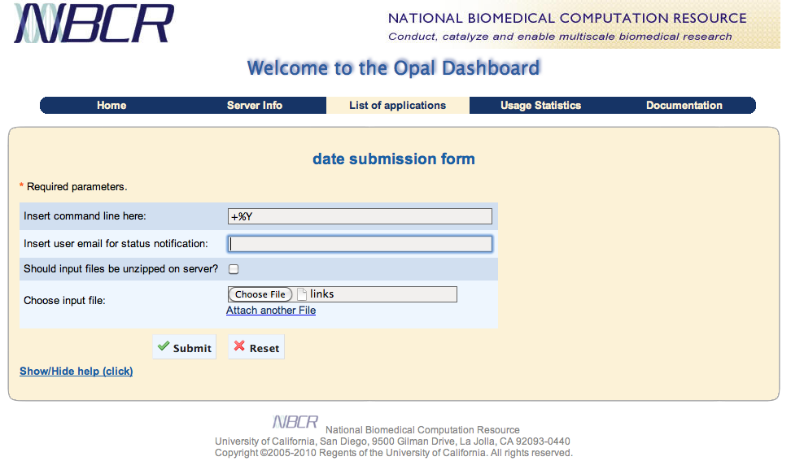

When an application has been deployed using a basic application configuration, such as the one used by the /bin/date example shown in Application Deployment, the Opal Dashboard will display a simple form with an input text field and an input file box. In this case, the application configuration file does not present any metadata describing the format of the application input arguments.
The user should type the desired command-line arguments into the input text box and, optionally, upload an input file. When a user specifies one file to upload, a form presents an Attach another File link which enables a button to upload more files. The user can indicate via a check button if the files should be uncompressed on the server.
